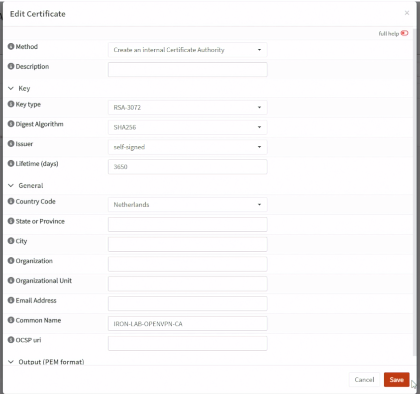
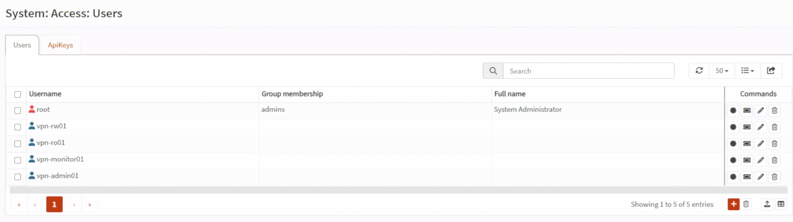
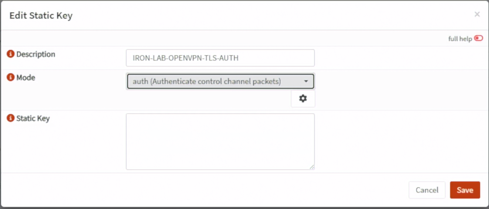
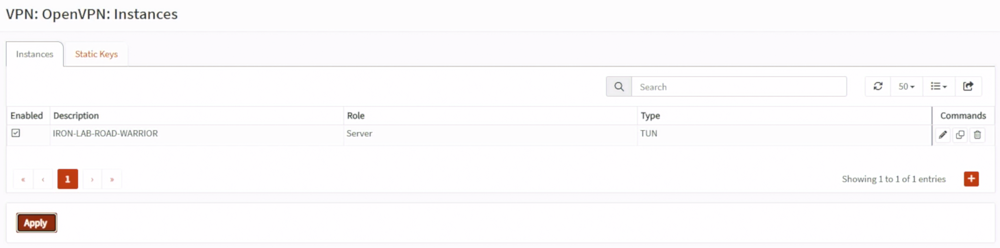
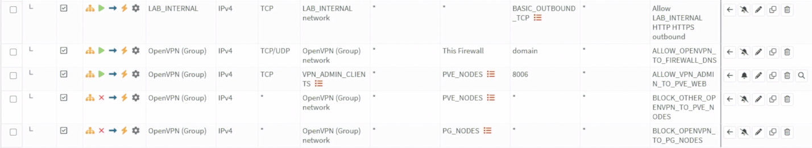
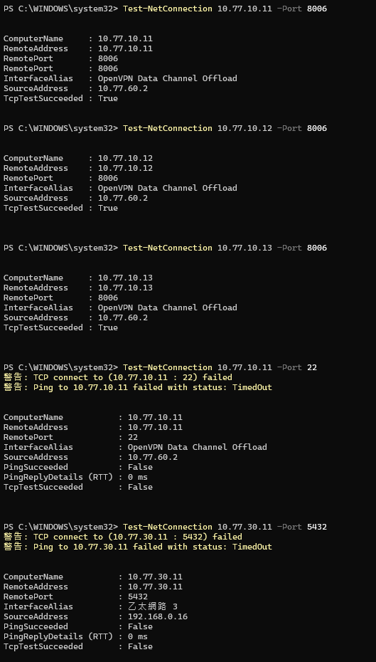

Day 17｜外部人員如何安全連入內部服務？OpenVPN、Road Warrior 與 Split Tunnel
對應文章：Day 17｜外部人員如何安全連入內部服務？OpenVPN、Road Warrior 與 Split Tunnel
本日建立 OPNsense OpenVPN Road Warrior。Tunnel Network 固定為 10.77.60.0/24。一般 VPN 使用者只能連固定服務入口；只有獨立 vpn-admin 群組可以連 PVE Web UI 8006，而且仍不能直接連 pg01～pg03、Patroni 或 etcd。
1. 確認內建 OpenVPN 功能
OPNsense 26.7 已將 OpenVPN 與新版 Instances、Client Export 功能整合在基礎系統。
- 到
System→Firmware→Packages，搜尋openvpn，確認套件已安裝。 - 到
VPN→OpenVPN，確認可以看到Instances。 - 同一選單確認可以看到
Client Export、Connection Status與Log File。 System→Firmware→Plugins只搜尋到os-openvpn-legacy是正常的，不要安裝它。本系列使用新版Instances，不使用舊版 Servers／Clients 設定頁。
2. 建立內部 CA
到 System → Trust → Authorities：
- Add。
- Method 選 Create an internal Certificate Authority。
Common Name填IRON-LAB-OPENVPN-CA。OPNsense 26.7 的目前畫面若沒有Descriptive Name，不需要另外尋找；若有選用的Description欄位，可填相同名稱方便辨識。- Key Type 選 RSA 3072 位元或畫面提供的更高安全等級。
- Digest Algorithm 選 SHA256 以上。
- Issuer 保持 Self-signed。
- Lifetime 依 Lab 設定並記錄到期日，例如
3650天只作為教學 CA 的有效期限。 - Country、State、City、Organization 等識別欄位可以依實際資料填寫；不影響本 Lab 路由設定。
- OCSP URI 留空，本系列沒有另外部署 OCSP Responder。
- 按 Save，回到 Authorities 清單確認
IRON-LAB-OPENVPN-CA已出現。

圖（一）建立 IRON-LAB-OPENVPN-CA 內部 CA。
不要把 CA Private Key 放入 Git。
3. 建立 Server Certificate
到 System → Trust → Certificates：
- 按 Add，Method 選
Create an internal Certificate。若選成 Import 或 CSR，後面不會出現簽發者選項。 - Type 選
Server Certificate。 - Private Key Location 選
Save on this firewall。 - Key Type 選 RSA 3072 位元或畫面提供的更高安全等級，Digest Algorithm 選 SHA256 以上。
- 新版畫面不會顯示名為
CA的欄位；在Issuer選IRON-LAB-OPENVPN-CA。這就是簽發本張 Server Certificate 的 CA。 - Common Name 填
vpn.lab.home。 - 在
DNS domain names加入vpn.lab.home。這個欄位就是憑證的 DNS Subject Alternative Name（SAN），OPNsense 26.7 不需要另外選 Type／Value。 - Lifetime 依 Lab 設定並記錄到期日，例如
825天。 - Description 若有顯示，可填
IRON-LAB-OPENVPN-SERVER；沒有就略過。 - Save 後回到 Certificates 清單，確認 Type 是 Server、Issuer 是
IRON-LAB-OPENVPN-CA。
如果選了 Create an internal Certificate 仍完全看不到 Issuer，先回 System → Trust → Authorities，確認 IRON-LAB-OPENVPN-CA 已成功儲存且帶有 Private Key；只有可簽發憑證的內部 CA 才能出現在 Issuer 清單。
4. 建立使用者與個人憑證
到 System → Access → Users，為每位測試者建立獨立帳號：
vpn-rw01
vpn-ro01
vpn-monitor01
vpn-admin01
每個帳號都要建立自己的 Client Certificate，而且必須與 OpenVPN Server Certificate 由同一個 CA 簽發。以 vpn-admin01 為例：
- 編輯
vpn-admin01使用者。 - 到該使用者的 Certificates 區域，按新增憑證。
- Method 選
Create an internal Certificate。 - Type 選
Client Certificate，不要選 Server Certificate。 - Issuer 選
IRON-LAB-OPENVPN-CA。 - Common Name 必須是
vpn-admin01，與 Username 完全相同；從使用者頁面建立時通常會自動帶入。 - Save，並為其餘三個帳號各自重複一次，不共用憑證或 Profile。
完成後到 System → Trust → Certificates 核對：
vpn.lab.home Type：Server Issuer：IRON-LAB-OPENVPN-CA
vpn-rw01 Type：Client Issuer：IRON-LAB-OPENVPN-CA
vpn-ro01 Type：Client Issuer：IRON-LAB-OPENVPN-CA
vpn-monitor01 Type：Client Issuer：IRON-LAB-OPENVPN-CA
vpn-admin01 Type：Client Issuer：IRON-LAB-OPENVPN-CA

圖（二）確認四個 OpenVPN 測試帳號已建立。
若 Client Certificate 的 Issuer 是其他 CA，不能直接修改原憑證的簽發者；回到對應使用者建立一張由 IRON-LAB-OPENVPN-CA 簽發的新憑證。先保留舊憑證，等新 Profile 匯出並連線成功後再撤銷舊憑證。
若啟用 TOTP，先確認 fw01 與手機時間一致，再測試 OTP。
另外建立本機群組 vpn-admin，只把 vpn-admin01 加入。一般 VPN 使用者不能加入這個群組。
5. 建立 OpenVPN Instance
先到 VPN → OpenVPN → Instances → Static Keys：
- 按 Add。
- Mode 選
auth。 - Description 填
IRON-LAB-OPENVPN-TLS-AUTH。 - 使用畫面上的齒輪／Generate 產生 Static Key。
- Save／Apply。
儲存後必須先回到 Static Keys 清單，確認能看到 IRON-LAB-OPENVPN-TLS-AUTH，再重新開啟／重新整理 Server Instance 表單。若只填 Description、沒有按齒輪產生 Key，或尚未 Save／Apply，TLS static key 選單會保持空白。

圖（三）建立 OpenVPN TLS Static Key。
再回到 VPN → OpenVPN → Instances 新增 Server。OPNsense 26.7 的欄位名稱是 Certificate，不叫 Server Certificate；在這個欄位選前一節建立的 vpn.lab.home Server Certificate。
- Role 選
Server。 - Description 填
IRON-LAB-ROAD-WARRIOR。 - Protocol 選
UDP (IPv4)。 - Port number 填
1194。 - Bind address 留空；fw01 WAN 使用 DHCP，留空會綁定可用位址。
- Server (IPv4) 填
10.77.60.0/24。 - Certificate 選
IRON-LAB-OPENVPN-SERVER。 - TLS static key 選
IRON-LAB-OPENVPN-TLS-AUTH。 - Authentication 選
Local Database；OTP 依實際啟用。 - Strict User/CN Matching 勾選；每位使用者憑證 CN 必須與 Username 相同。
- Local Network 加入
10.77.10.0/24與10.77.20.0/24；不要推送整個10.77.0.0/16。 - Redirect gateway 留空，使用 Split Tunnel。
- DNS Server 填
10.77.10.1，也就是 fw01 的 Management VLAN 位址；這個欄位要填 IP，不能填lab.home或home.lab。 - DNS Default Domain／Search Domain 若畫面有提供，填
lab.home。本系列主機名稱統一為pve01.lab.home、app01.lab.home等，不使用home.lab。
使用現代 TLS 與 Data Cipher 預設值，不啟用 Compression。Save／Apply 後確認 Instance Running。

圖（四）確認 OpenVPN Instance 已啟用。
6. WAN 與 OpenVPN Firewall Rule
6.1 建立 WAN UDP 1194 規則
- 進入
Firewall→Rules，按右下角橘色+。 - Interface 只選
WAN。 - Action 選
Pass，Direction 選in，Quick 保持勾選。 - TCP/IP Version 選
IPv4，Protocol 選UDP。 - Source 選
any。 - Destination 選
WAN address。 - Destination Port 填
1194。 - 勾選 Log，Description 填
ALLOW_WAN_TO_OPENVPN_1194。 - 本 Lab 的測試電腦與 fw01 WAN 同在
192.168.0.0/24，展開 Advanced，將Disable reply-to勾選，或把 reply-to 設為Disable／None。正式 Internet／PPPoE 環境不需要直接照抄這項。 - Save 後按
Apply。本系列沒有另外建立一條可見的 WAN 最終 Block Rule；未命中 Allow 的其他 WAN 流量會由 OPNsense／pf 內建的隱含 Default Deny 拒絕。若你自行建立過明確 Block，才需要把這條 Allow 排在它上方。
這條規則只讓 Client 建立 VPN Tunnel，不代表 Client 已經可以存取任何內部服務。
6.2 建立 VPN-Admin 動態 Alias
- 進入
Firewall→Aliases，按右下角橘色+。 - Name 填
VPN_ADMIN_CLIENTS。 - Type 選
OpenVPN group。 - Content 選／填入 Day 17 建立的本機群組
vpn-admin。 - Description 填
Connected OpenVPN members of vpn-admin。 - Save，再按
Apply。
這個 Alias 在還沒有人登入 VPN 時可以是空的。vpn-admin01 連線後，OPNsense 才會把它取得的 10.77.60.x Tunnel IP 動態加入 Alias。憑證 Common Name 必須與 Username vpn-admin01 相同，且該使用者必須屬於 vpn-admin。
6.3 建立 OpenVPN DNS 規則
- 回到
Firewall→Rules，按+。 - Interface 選
OpenVPN。這是 OPNsense 將所有 OpenVPN Tunnel 集合起來的介面群組，不要選 WAN 或 LAB_INTERNAL。 - Action 選
Pass，Direction 選in，Quick 保持勾選。 - Version 選
IPv4，Protocol 選TCP/UDP。 - Source 選
OpenVPN network；若目前畫面沒有這個內建選項，Source Type 選Network並填10.77.60.0/24。 - Destination 選
This Firewall。 - Destination Port 填
53。 - Description 填
ALLOW_OPENVPN_TO_FIREWALL_DNS。 - Save／Apply。
6.4 只讓 VPN-Admin 存取 PVE Web UI
新增第一條規則：
- Interface 選
OpenVPN，Action 選Pass，Version 選IPv4，Protocol 選TCP。 - Source 選 Alias
VPN_ADMIN_CLIENTS。 - Destination 選 Alias
PVE_NODES。 - Destination Port 填
8006。 - 勾選 Log，Description 填
ALLOW_VPN_ADMIN_TO_PVE_WEB。 - Save／Apply。
緊接著新增第二條規則：
- Interface 選
OpenVPN，Action 選Block，Version 選IPv4，Protocol 選any。 - Source 使用
OpenVPN network；沒有內建選項時填10.77.60.0/24。 - Destination 選
PVE_NODES，Destination Port 保持any。 - 勾選 Log，Description 填
BLOCK_OTHER_OPENVPN_TO_PVE_NODES。 - Save／Apply。
第一條 Allow 必須位於第二條 Block 上方。如此 vpn-admin01 只能連 PVE TCP 8006；它連 PVE SSH 22 仍會命中第二條 Block，一般 VPN 使用者連 8006 也會被同一條規則拒絕。

圖（五）確認 OpenVPN 最小權限規則與排列順序。
6.5 明確阻擋 VPN 直連 PostgreSQL 節點
- 新增規則，Interface 選
OpenVPN，Action 選Block。 - Version 選
IPv4，Protocol 選any。 - Source 使用
OpenVPN network或10.77.60.0/24。 - Destination 選 Day 14 已建立的
PG_NODES。 - Destination Port 保持
any。 - 勾選 Log，Description 填
BLOCK_OPENVPN_TO_PG_NODES。 - Save／Apply。
這一條直接阻擋 VPN 使用者連 pg01～pg03，比拆成 5432、8008、2379、2380 四組規則簡單，也能避免遺漏其他管理 Port。Day 26 完成的 DB RW／RO VIP 位於 Service VLAN，不屬於 PG_NODES，後續仍能另外建立精確的 VIP Allow。
6.6 確認規則順序
在 Firewall → Rules 左上角的篩選選擇 OpenVPN，順序應為：
ALLOW_OPENVPN_TO_FIREWALL_DNS
ALLOW_VPN_ADMIN_TO_PVE_WEB
BLOCK_OTHER_OPENVPN_TO_PVE_NODES
BLOCK_OPENVPN_TO_PG_NODES
未來 Day 26／29 的服務 Allow
其他未授權流量由 OPNsense／pf 隱含 Default Deny 拒絕
不另外建立 OpenVPN network → any 的明確最終 Block。沒有命中任何 Pass Rule 的其他流量，直接由 OPNsense／pf 內建的隱含 Default Deny 拒絕。
6.7 今天先不要建立的規則
下列服務尚未完成，Day 17 只記錄，不進入 GUI 建立：
Day 26：VPN-DB-RW → DB RW VIP TCP 5432
Day 26：VPN-DB-RO → DB RO VIP TCP 5432
Day 29：VPN-Monitor → monitor01 Grafana 指定 Port
正式環境若需要更嚴格的群組與固定位址隔離，可以使用不同 OpenVPN Instance／Tunnel Pool、Client Specific Override 或外部身分系統；本 Lab 先用 OpenVPN group Alias 完成 VPN-Admin 的動態授權。
7. 匯出與連線
到 VPN → OpenVPN → Client Export：
- Remote Access Server 選
IRON-LAB-ROAD-WARRIOR。 - Host Name Resolution 填實際 WAN DNS／IP。
- 確認清單顯示的是剛建立、Issuer 為
IRON-LAB-OPENVPN-CA的使用者憑證。 - Export Type 選
File only／Inline configuration，下載把 CA、使用者憑證、Private Key 與 TLS Static Key 內嵌在同一份.ovpn的版本。 - 將 Profile 透過受控方式交付，不上傳 Repository。
如果 Client Export 顯示 Certificate does not belong to server CA，代表所選 Client Certificate 與 Server Certificate 的 Issuer 不一致。回到 System → Trust → Certificates 比對兩者的 Issuer；不要重做防火牆規則，也不要更換 WAN Port。若 Instance 的 Certificate 選錯，回 VPN → OpenVPN → Instances，把 Certificate 改回由 IRON-LAB-OPENVPN-CA 簽發的 vpn.lab.home Server Certificate。
如果 Client 啟動時顯示 Cannot pre-load keyfile (...-tls.key)，代表下載的是多檔案版本，卻只複製或匯入了 .ovpn。最簡單的修正是重新匯出 Inline／File only 版本；若要保留原本的匯出格式，必須完整解壓縮，並讓 .ovpn 與它引用的 ...-tls.key、憑證及 Private Key 保持在同一個目錄，不要只取出 .ovpn。--cipher is not set 在這個案例只是警告，不是程式退出的原因，不要為了消除警告加入已淘汰的 BF-CBC。
Client 連線後確認：
ipconfig
route print
Resolve-DnsName pve01.lab.home -Server 10.77.10.1
Test-NetConnection 10.77.20.11 -Port 5432
Test-NetConnection 10.77.30.11 -Port 5432
連線後補上內部 DNS 記錄
Windows 的 OpenVPN 介面取得 10.77.60.x/24，而且 route print 顯示 10.77.10.0/24、10.77.20.0/24 經由 10.77.60.1 時，代表 Split Tunnel 已正常建立。OpenVPN 介面沒有 Default Gateway 是正常現象；一般上網仍走本機原有閘道，只有指定的 Lab 網段走 VPN。
如果執行下列命令時收到 DNS_ERROR_RCODE_NAME_ERROR：
Resolve-DnsName pve01.lab.home -Server 10.77.10.1
這個結果不是 VPN 或 DNS Firewall Rule 不通。OPNsense 已經收到查詢並回覆 NXDOMAIN，只是 Unbound DNS 還沒有 pve01.lab.home 記錄。
到 Services → Unbound DNS → Overrides，依序新增三筆 Host Override：
Host：pve01
Domain：lab.home
Type：A
IP Address：10.77.10.11
Host：pve02
Domain：lab.home
Type：A
IP Address：10.77.10.12
Host：pve03
Domain：lab.home
Type：A
IP Address：10.77.10.13
Save／Apply 後回到 Windows 清除 DNS Cache 並重新查詢：
Clear-DnsClientCache
Resolve-DnsName pve01.lab.home -Server 10.77.10.1
Resolve-DnsName pve02.lab.home -Server 10.77.10.1
Resolve-DnsName pve03.lab.home -Server 10.77.10.1
預期分別取得 10.77.10.11、10.77.10.12、10.77.10.13。
Day 26 前第一條 DB VIP 測試可以尚未成功，但直連 10.77.30.11 必須被拒絕。
使用 vpn-admin01 Profile 連線後，在 Windows PowerShell 測試：
Test-NetConnection 10.77.10.11 -Port 8006
Test-NetConnection 10.77.10.12 -Port 8006
Test-NetConnection 10.77.10.13 -Port 8006
Test-NetConnection 10.77.10.11 -Port 22
前三項應成功，TCP 22 應失敗。接著使用瀏覽器開啟 https://10.77.10.11:8006，以 PVE 管理員身分登入。

圖（六）vpn-admin01 連入三台 PVE 的 TCP 8006 成功、連入 TCP 22 失敗。
再換成 vpn-ro01 或 vpn-monitor01 Profile，重測 TCP 8006，必須被拒絕並在 Live View 命中 PVE Block Rule。
本次 vpn-admin01 實測中，三台 PVE 的 TCP 8006 均可連線、PVE SSH 22 與 pg01 TCP 5432 均被拒絕，代表 VPN 路由和 Day 17 的最小權限規則符合預期。
8. 撤銷測試
- 停用
vpn-ro01帳號。 - 撤銷該 Client Certificate，更新 CRL。
- 中止既有 Session。
- 確認舊 Profile 無法重新連線。